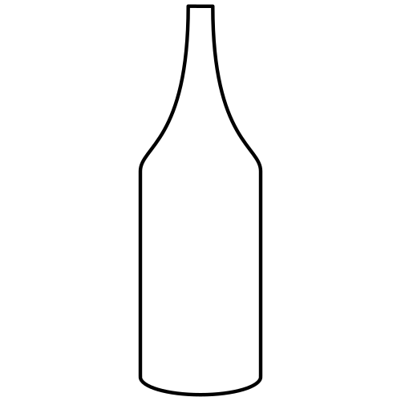
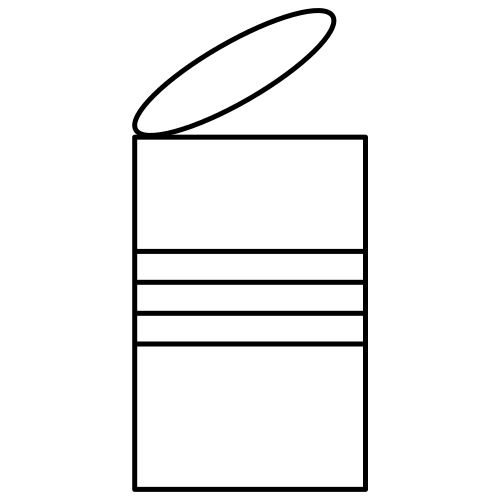
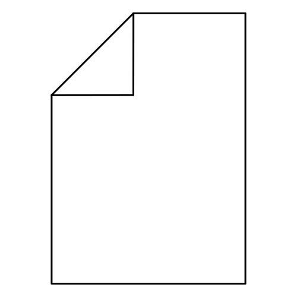
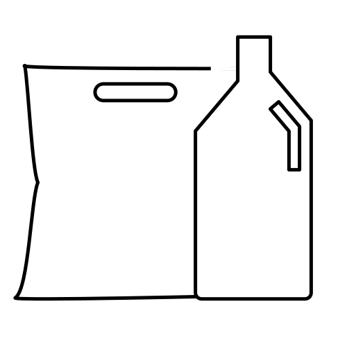
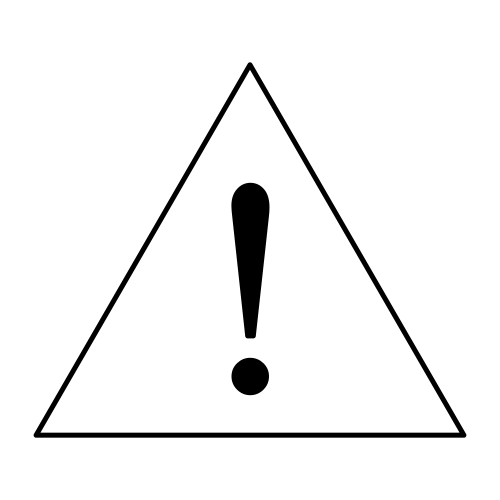

Sorterings oversigt
Restaffald: Pizza bakker skal i restaffald da det ikke er rent pap. Er du i tvivl om hvilken affaldsspand du skal komme det i, ville det være bedst at tjekke op på det men ellers komme det i restaffald.
Madaffald: Madaffald kan bruges til at laves om til naturgasser som kan bruges til afbrænding i stedet for fossile gasser. Resterne kan bruges til Naturlige gødning af marker.
Glas: Husk at skille så meget som muligt. F.eks. Et syltetøjs glas låg til metal og det afskyllet glas til glas.
Metal: Dåser uden pant, pander, gryder og konservesdåser, må kommes til metal. Husk dog at konservesdåser skal skrabes eller skyldes hurtigt af inden de kommer til metal.

Kattoner: Fra juice og mælk skal i restaffald, med mindre at man har en special spand der hjemme til det (Det er regerings plan at vi på et tidspunkt skal sortere dem anderledes).
Pap: Er pappet rent kan det kommes i pap spanden, vis det er blevet beskidt så som en pizza bakke skal det til rest affaldet.
Papir: Papir er skal behandles lige som pap, er det rent papir kan det kommes i papir spanden, vis ikke skal det i restskraldspanden eks. vis : papirsposser fra Mcdonalds eller bagepapir.

Tekstil: gamelt nedslidt tøj kan ryge i kontaineren til genbrug så det kan bruges igen, men kan det godt bruges så kom det i poser og donnere evt. til røde kors.
Plast: bøtter der har haft madvare eller andre ting i skal afskylles for rester inden de kommes i plastspanden. eks. på dette kan være: Syltetøjsbøtter, kødbakker og flasker uden pant.
Farligtaffald: dåser der har været sprey maling i, skal til farligt affald da de stadig er undertryk og derfor ikke bare ned til andet metal.